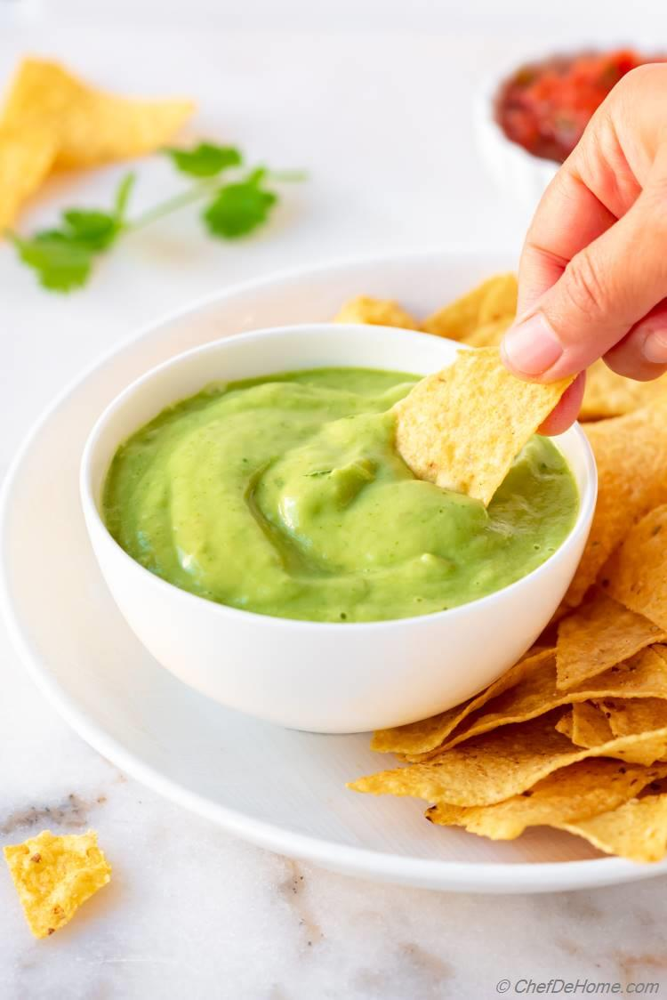

Avocado Salsa

Description
This is another recipe given to me by my mom. It is for a simple avocado salsa that goes pretty well with carne asada.
It tastes really good. Another good thing about it is you can make it as spicy as you want and it is flavorful no matter the spice level.
Ingredients
- 1 Avocado
- 1 Green tomato
- A small bunch of cilantro
- 3-5 serrano peppers
- Salt
- Lime
- Sparkling Water(optional)
Cooking Steps
- 1. Cut the serrano peppers in half and add those into the blender. The amount depends on how spicy you want.
- 2. Add in the cilantro.
- 3. Add in the avocado.
- 4. Once you have the ingredients in the blender. Add a small amount of regular water, just enough to cover the bottom of the blender, and blend everything together.
- 5. Once everything is blended, pour into a container and add the lime juice to help prevent the sauce from turning a darker green color. You can also add some sparkling water to help prevent it from browning.
- 6. The salsa is done. Enjoy!